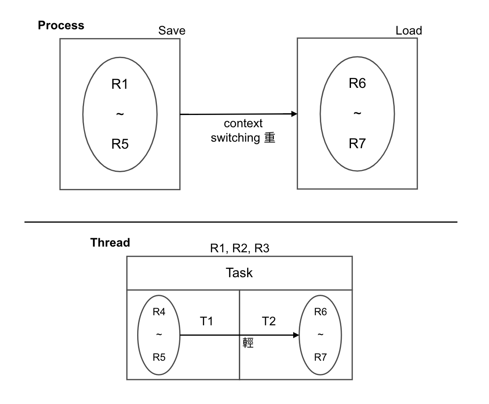
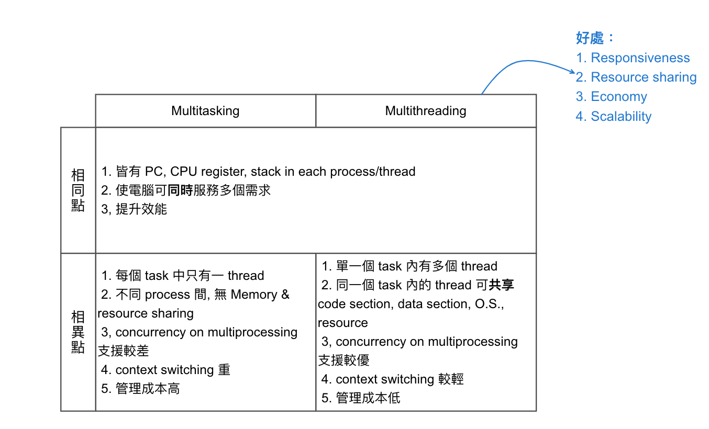

Chapter3-作業系統-行程-part3
3.4 行程
目錄
- Process Definition
- Program vs Process
- Process STD
- PCB, context switching
- CPU Scheduling algorithm
- Thread 執行緒
Thread (執行緒) (為執行的最小單位)

Compare process and thread
| Process | Thread |
|---|---|
| Heavy weight process | Light weight process |
| 各 process 無法共享：Memory space, O.S. Resource, Files | 同一 Task 中的 Threads 可共用 |
| Context Switching 重 | Context Switching 輕 |
| 相當於一 Task 中, 只有 single thread | 有 multithread 多執行緒系統 |
| 較不易發揮 | 在 Multiprocessor 的架構, 可充分發揮其效能 |
| 因為無共享 Memory, 故不需處理 Race condition | 會共享 Memory, 故須針對 Race Condition 競爭情況 作處理 |
Thread (執行緒) 製作方式
- User level: 由 user-level 自行處理, 藉由執行緒程式庫來對 thread 之運作加以管理, kernel 不需介入
- Kernel level: 由 kernel-level 著手處理 thread 的相關運作

Compare multitasking and multithreading
